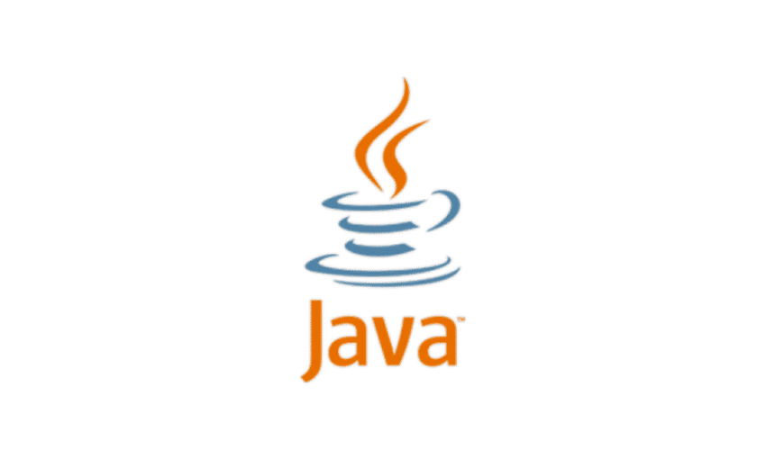
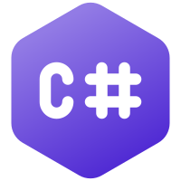

O Python é uma linguagem de programação amplamente usada em aplicações da Web, desenvolvimento
de software, ciência de dados e machine learning (ML)
Java

Java é uma linguagem multiplataforma, orientada a objetos e centrada em rede que pode ser usada
como uma plataforma em si.
C#

C# é uma linguagem de programação orientada a objetos e orientada a componentes
R
É uma linguagem estatística e gráfica, multi-paradigma orientada a objetos, programação funcional, dinâmica, fracamente tipada, voltada à manipulação, análise e visualização de dados